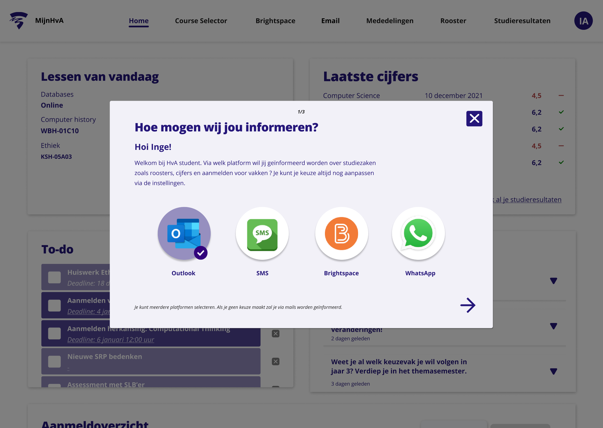

MijnHvA Student
Goed Georganiseerd Onderwijs (GGO) is een programma dat zich inzet om het onderwijs beter te organiseren, voor studenten en medewerkers. Het programma bestaat uit verschillende projecten, waaronder het project ‘Aanmelden vakken’. Aan het huidige systeem waarmee de studenten zich aanmelden voor vakken zitten nogal wat haken en ogen. Daarom is aan ons team gevraagd of wij een prototype willen ontwikkelen, wat de ervaring van het aanmelden voor vakken bevorderd.
In eerste instantie hebben wij de situatie geïnventariseerd en onderzoek gedaan naar het probleem. Vervolgens hebben we ideeën uitgewerkt en getest en deze vergeleken met het bestaande concept. Door te testen kregen wij een goed overzicht in wat de pijnpunten waren in het bestaande user interface en aanmeldproces.
Uiteindelijk zijn wij door steeds te itereren tot een concept gekomen waarbij de student gebruik kan maken van één digitale omgeving. Dit concept heb ik met een collega uitgewerkt tot een werkend prototype in Figma. Het prototype is gedeeld met en gepresenteerd aan de GGO. Zij zullen in de nabije toekomst een werkend systeem realiseren op basis van ons onderzoek en prototype.
